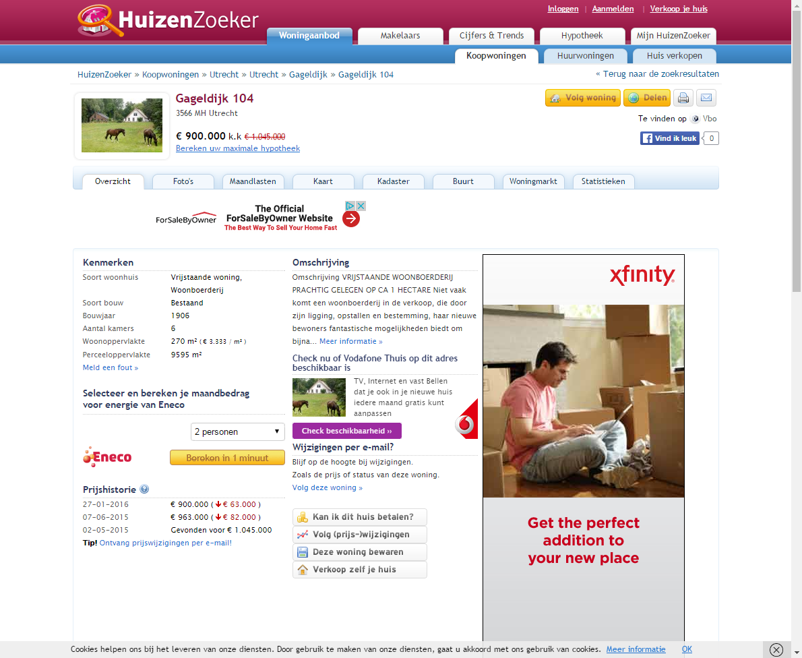

Website testing using BrowserTest with Storyboard
On this page we compare the asking price of the same house on two websites. We use a special version of Slim's ScriptTable, a storyboard, which will automatically take a screenshot after each action.
The configuration of Selenium (i.e. which browser to use) and starting the browser session is done in the SuiteSetup[?]. Which allows this configuration to be shared between tests. Closing the browser is done in SuiteTearDown, which happens after all tests are completed.
| storyboard | browser test | |||
| open | http://www.huizenzoeker.nl | |||
| enter | Gageldijk, Utrecht | for | Plaats, postcode met straatnaam | |
| press enter |  | |||
| click | Gageldijk 104 |  | ||
| $price<-[€ 900.000] | value of | xpath=//div[@class='prijs']/strong | ||
| open | http://www.funda.nl | |||
| enter | Gageldijk, Utrecht | as | Plaats, buurt, adres etc | |
| note | select option from autocomplete | |||
| press | down | |||
| press | enter |  | ||
| click Timed-out waiting (after 10s). |
Zoek |  | ||
| click The instruction timed out after 1000 seconds | Gageldijk 104 | org.openqa.selenium.UnsupportedCommandException: ERROR The test with session id a423c28c437449879217d6bfe36ee33d has already finished, and can't receive further commands. You can learn more at https://saucelabs.com/jobs/a423c28c437449879217d6bfe36ee33d For help, please check https://wiki.saucelabs.com/display/DOCS/Common+Error+Messages Command duration or timeout: 92 milliseconds Build info: version: '2.53.0', revision: '35ae25b1534ae328c771e0856c93e187490ca824', time: '2016-03-15 10:43:46' System info: host: 'testing-worker-linux-docker-6b45e893-3395-linux-2', ip: '172.17.11.44', os.name: 'Linux', os.arch: 'amd64', os.version: '3.13.0-40-generic', java.version: '1.7.0_76' Session ID: a423c28c437449879217d6bfe36ee33d Driver info: org.openqa.selenium.remote.RemoteWebDriver Capabilities [{platform=XP, acceptSslCerts=true, javascriptEnabled=true, hasMetadata=true, browserName=chrome, chrome={userDataDir=C:\Users\ADMINI~1\AppData\Local\Temp\scoped_dir1632_24718, chromedriverVersion=2.21.371459 (36d3d07f660ff2bc1bf28a75d1cdabed0983e7c4)}, rotatable=false, locationContextEnabled=true, mobileEmulationEnabled=false, webdriver.remote.sessionid=a423c28c437449879217d6bfe36ee33d, version=51.0.2704.63, takesHeapSnapshot=true, cssSelectorsEnabled=true, databaseEnabled=false, handlesAlerts=true, browserConnectionEnabled=false, webStorageEnabled=true, nativeEvents=true, hasTouchScreen=false, applicationCacheEnabled=false, takesScreenshot=true}] at sun.reflect.NativeConstructorAccessorImpl.newInstance0(Native Method) at sun.reflect.NativeConstructorAccessorImpl.newInstance(NativeConstructorAccessorImpl.java:57) at sun.reflect.DelegatingConstructorAccessorImpl.newInstance(DelegatingConstructorAccessorImpl.java:45) at java.lang.reflect.Constructor.newInstance(Constructor.java:526) at org.openqa.selenium.remote.ErrorHandler.createThrowable(ErrorHandler.java:206) at org.openqa.selenium.remote.ErrorHandler.throwIfResponseFailed(ErrorHandler.java:158) at org.openqa.selenium.remote.RemoteWebDriver.execute(RemoteWebDriver.java:678) at org.openqa.selenium.remote.RemoteWebDriver.execute(RemoteWebDriver.java:701) at org.openqa.selenium.remote.RemoteWebDriver.getScreenshotAs(RemoteWebDriver.java:335) at nl.hsac.fitnesse.fixture.util.selenium.SeleniumHelper.takeScreenshot(SeleniumHelper.java:1058) at nl.hsac.fitnesse.fixture.slim.web.BrowserTest.createScreenshot(BrowserTest.java:1435) at nl.hsac.fitnesse.fixture.slim.web.BrowserTest.takeScreenshot(BrowserTest.java:1407) at sun.reflect.GeneratedMethodAccessor4.invoke(Unknown Source) at sun.reflect.DelegatingMethodAccessorImpl.invoke(DelegatingMethodAccessorImpl.java:43) at java.lang.reflect.Method.invoke(Method.java:606) at fitnesse.slim.fixtureInteraction.DefaultInteraction.methodInvoke(DefaultInteraction.java:148) at nl.hsac.fitnesse.fixture.slim.SlimFixture.invoke(SlimFixture.java:45) at nl.hsac.fitnesse.fixture.slim.web.BrowserTest.superInvoke(BrowserTest.java:110) at nl.hsac.fitnesse.fixture.slim.web.BrowserTest.invoke(BrowserTest.java:62) at nl.hsac.fitnesse.fixture.slim.SlimFixture.aroundSlimInvoke(SlimFixture.java:25) at sun.reflect.GeneratedMethodAccessor1.invoke(Unknown Source) at sun.reflect.DelegatingMethodAccessorImpl.invoke(DelegatingMethodAccessorImpl.java:43) at java.lang.reflect.Method.invoke(Method.java:606) at fitnesse.slim.fixtureInteraction.DefaultInteraction.methodInvoke(DefaultInteraction.java:148) at fitnesse.slim.fixtureInteraction.DefaultInteraction.callMethod(DefaultInteraction.java:131) at fitnesse.slim.fixtureInteraction.DefaultInteraction.invokeMethod(DefaultInteraction.java:115) at fitnesse.slim.fixtureInteraction.DefaultInteraction.findAndInvoke(DefaultInteraction.java:92) at fitnesse.slim.MethodExecutor.findAndInvoke(MethodExecutor.java:18) at fitnesse.slim.FixtureMethodExecutor.execute(FixtureMethodExecutor.java:18) at fitnesse.slim.StatementExecutor.getMethodExecutionResult(StatementExecutor.java:133) at fitnesse.slim.StatementExecutor.call(StatementExecutor.java:106) at fitnesse.slim.StatementTimeoutExecutor$3.call(StatementTimeoutExecutor.java:90) at java.util.concurrent.FutureTask.run(FutureTask.java:262) at java.util.concurrent.ThreadPoolExecutor.runWorker(ThreadPoolExecutor.java:1145) at java.util.concurrent.ThreadPoolExecutor$Worker.run(ThreadPoolExecutor.java:615) at java.lang.Thread.run(Thread.java:745) | ||
| check | value of | Vraagprijs | $price k.k. org.openqa.selenium.UnsupportedCommandException: ERROR The test with session id a423c28c437449879217d6bfe36ee33d has already finished, and can't receive further commands. You can learn more at https://saucelabs.com/jobs/a423c28c437449879217d6bfe36ee33d For help, please check https://wiki.saucelabs.com/display/DOCS/Common+Error+Messages Command duration or timeout: 95 milliseconds Build info: version: '2.53.0', revision: '35ae25b1534ae328c771e0856c93e187490ca824', time: '2016-03-15 10:43:46' System info: host: 'testing-worker-linux-docker-6b45e893-3395-linux-2', ip: '172.17.11.44', os.name: 'Linux', os.arch: 'amd64', os.version: '3.13.0-40-generic', java.version: '1.7.0_76' *** Element info: {Using=xpath, value=//label/descendant-or-self::text()[normalize-space(.)='Vraagprijs']/ancestor-or-self::label} Session ID: a423c28c437449879217d6bfe36ee33d Driver info: org.openqa.selenium.remote.RemoteWebDriver Capabilities [{platform=XP, acceptSslCerts=true, javascriptEnabled=true, hasMetadata=true, browserName=chrome, chrome={userDataDir=C:\Users\ADMINI~1\AppData\Local\Temp\scoped_dir1632_24718, chromedriverVersion=2.21.371459 (36d3d07f660ff2bc1bf28a75d1cdabed0983e7c4)}, rotatable=false, locationContextEnabled=true, mobileEmulationEnabled=false, webdriver.remote.sessionid=a423c28c437449879217d6bfe36ee33d, version=51.0.2704.63, takesHeapSnapshot=true, cssSelectorsEnabled=true, databaseEnabled=false, handlesAlerts=true, browserConnectionEnabled=false, webStorageEnabled=true, nativeEvents=true, hasTouchScreen=false, applicationCacheEnabled=false, takesScreenshot=true}] at sun.reflect.NativeConstructorAccessorImpl.newInstance0(Native Method) at sun.reflect.NativeConstructorAccessorImpl.newInstance(NativeConstructorAccessorImpl.java:57) at sun.reflect.DelegatingConstructorAccessorImpl.newInstance(DelegatingConstructorAccessorImpl.java:45) at java.lang.reflect.Constructor.newInstance(Constructor.java:526) at org.openqa.selenium.remote.ErrorHandler.createThrowable(ErrorHandler.java:206) at org.openqa.selenium.remote.ErrorHandler.throwIfResponseFailed(ErrorHandler.java:158) at org.openqa.selenium.remote.RemoteWebDriver.execute(RemoteWebDriver.java:678) at org.openqa.selenium.remote.RemoteWebDriver.findElements(RemoteWebDriver.java:388) at org.openqa.selenium.remote.RemoteWebDriver.findElementsByXPath(RemoteWebDriver.java:504) at org.openqa.selenium.By$ByXPath.findElements(By.java:356) at org.openqa.selenium.remote.RemoteWebDriver.findElements(RemoteWebDriver.java:351) at nl.hsac.fitnesse.fixture.util.selenium.SeleniumHelper.findElement(SeleniumHelper.java:950) at nl.hsac.fitnesse.fixture.util.selenium.SeleniumHelper.findElement(SeleniumHelper.java:802) at nl.hsac.fitnesse.fixture.util.selenium.SeleniumHelper.findElement(SeleniumHelper.java:791) at nl.hsac.fitnesse.fixture.util.selenium.SeleniumHelper.findByXPath(SeleniumHelper.java:782) at nl.hsac.fitnesse.fixture.util.selenium.SeleniumHelper.getElementByLabel(SeleniumHelper.java:449) at nl.hsac.fitnesse.fixture.util.selenium.SeleniumHelper.getElementByLabelOccurrence(SeleniumHelper.java:404) at nl.hsac.fitnesse.fixture.util.selenium.SeleniumHelper.getElementExact(SeleniumHelper.java:284) at nl.hsac.fitnesse.fixture.util.selenium.SeleniumHelper.getElement(SeleniumHelper.java:250) at nl.hsac.fitnesse.fixture.slim.web.BrowserTest.getElement(BrowserTest.java:1068) at nl.hsac.fitnesse.fixture.slim.web.BrowserTest.getElementToRetrieveValue(BrowserTest.java:812) at nl.hsac.fitnesse.fixture.slim.web.BrowserTest.valueFor(BrowserTest.java:807) at nl.hsac.fitnesse.fixture.slim.web.BrowserTest.valueOf(BrowserTest.java:802) at sun.reflect.GeneratedMethodAccessor2.invoke(Unknown Source) at sun.reflect.DelegatingMethodAccessorImpl.invoke(DelegatingMethodAccessorImpl.java:43) at java.lang.reflect.Method.invoke(Method.java:606) at fitnesse.slim.fixtureInteraction.DefaultInteraction.methodInvoke(DefaultInteraction.java:148) at nl.hsac.fitnesse.fixture.slim.SlimFixture.invoke(SlimFixture.java:45) at nl.hsac.fitnesse.fixture.slim.web.BrowserTest.superInvoke(BrowserTest.java:110) at nl.hsac.fitnesse.fixture.slim.web.BrowserTest$1.apply(BrowserTest.java:74) at nl.hsac.fitnesse.fixture.slim.web.BrowserTest$1.apply(BrowserTest.java:70) at nl.hsac.fitnesse.fixture.util.selenium.TryAllFramesConditionDecorator.apply(TryAllFramesConditionDecorator.java:34) at nl.hsac.fitnesse.fixture.util.selenium.TryAllFramesConditionDecorator.apply(TryAllFramesConditionDecorator.java:16) at nl.hsac.fitnesse.fixture.util.selenium.SeleniumHelper$2.apply(SeleniumHelper.java:919) at nl.hsac.fitnesse.fixture.util.selenium.SeleniumHelper$2.apply(SeleniumHelper.java:915) at org.openqa.selenium.support.ui.FluentWait.until(FluentWait.java:238) at nl.hsac.fitnesse.fixture.util.selenium.SeleniumHelper.waitUntil(SeleniumHelper.java:904) at nl.hsac.fitnesse.fixture.slim.web.BrowserTest.waitUntilImpl(BrowserTest.java:1505) at nl.hsac.fitnesse.fixture.slim.web.BrowserTest.waitUntilOrNull(BrowserTest.java:1498) at nl.hsac.fitnesse.fixture.slim.web.BrowserTest.invokedWrappedInWaitUntil(BrowserTest.java:96) at nl.hsac.fitnesse.fixture.slim.web.BrowserTest.invoke(BrowserTest.java:64) at nl.hsac.fitnesse.fixture.slim.SlimFixture.aroundSlimInvoke(SlimFixture.java:25) at sun.reflect.GeneratedMethodAccessor1.invoke(Unknown Source) at sun.reflect.DelegatingMethodAccessorImpl.invoke(DelegatingMethodAccessorImpl.java:43) at java.lang.reflect.Method.invoke(Method.java:606) at fitnesse.slim.fixtureInteraction.DefaultInteraction.methodInvoke(DefaultInteraction.java:148) at fitnesse.slim.fixtureInteraction.DefaultInteraction.callMethod(DefaultInteraction.java:131) at fitnesse.slim.fixtureInteraction.DefaultInteraction.invokeMethod(DefaultInteraction.java:115) at fitnesse.slim.fixtureInteraction.DefaultInteraction.findAndInvoke(DefaultInteraction.java:92) at fitnesse.slim.MethodExecutor.findAndInvoke(MethodExecutor.java:18) at fitnesse.slim.FixtureMethodExecutor.execute(FixtureMethodExecutor.java:18) at fitnesse.slim.StatementExecutor.getMethodExecutionResult(StatementExecutor.java:133) at fitnesse.slim.StatementExecutor.call(StatementExecutor.java:106) at fitnesse.slim.StatementTimeoutExecutor$3.call(StatementTimeoutExecutor.java:90) at java.util.concurrent.FutureTask.run(FutureTask.java:262) at java.util.concurrent.ThreadPoolExecutor.runWorker(ThreadPoolExecutor.java:1145) at java.util.concurrent.ThreadPoolExecutor$Worker.run(ThreadPoolExecutor.java:615) at java.lang.Thread.run(Thread.java:745) |
org.openqa.selenium.UnsupportedCommandException: ERROR The test with session id a423c28c437449879217d6bfe36ee33d has already finished, and can't receive further commands. You can learn more at https://saucelabs.com/jobs/a423c28c437449879217d6bfe36ee33d For help, please check https://wiki.saucelabs.com/display/DOCS/Common+Error+Messages Command duration or timeout: 83 milliseconds Build info: version: '2.53.0', revision: '35ae25b1534ae328c771e0856c93e187490ca824', time: '2016-03-15 10:43:46' System info: host: 'testing-worker-linux-docker-6b45e893-3395-linux-2', ip: '172.17.11.44', os.name: 'Linux', os.arch: 'amd64', os.version: '3.13.0-40-generic', java.version: '1.7.0_76' Session ID: a423c28c437449879217d6bfe36ee33d Driver info: org.openqa.selenium.remote.RemoteWebDriver Capabilities [{platform=XP, acceptSslCerts=true, javascriptEnabled=true, hasMetadata=true, browserName=chrome, chrome={userDataDir=C:\Users\ADMINI~1\AppData\Local\Temp\scoped_dir1632_24718, chromedriverVersion=2.21.371459 (36d3d07f660ff2bc1bf28a75d1cdabed0983e7c4)}, rotatable=false, locationContextEnabled=true, mobileEmulationEnabled=false, webdriver.remote.sessionid=a423c28c437449879217d6bfe36ee33d, version=51.0.2704.63, takesHeapSnapshot=true, cssSelectorsEnabled=true, databaseEnabled=false, handlesAlerts=true, browserConnectionEnabled=false, webStorageEnabled=true, nativeEvents=true, hasTouchScreen=false, applicationCacheEnabled=false, takesScreenshot=true}] at sun.reflect.NativeConstructorAccessorImpl.newInstance0(Native Method) at sun.reflect.NativeConstructorAccessorImpl.newInstance(NativeConstructorAccessorImpl.java:57) at sun.reflect.DelegatingConstructorAccessorImpl.newInstance(DelegatingConstructorAccessorImpl.java:45) at java.lang.reflect.Constructor.newInstance(Constructor.java:526) at org.openqa.selenium.remote.ErrorHandler.createThrowable(ErrorHandler.java:206) at org.openqa.selenium.remote.ErrorHandler.throwIfResponseFailed(ErrorHandler.java:158) at org.openqa.selenium.remote.RemoteWebDriver.execute(RemoteWebDriver.java:678) at org.openqa.selenium.remote.RemoteWebDriver.execute(RemoteWebDriver.java:701) at org.openqa.selenium.remote.RemoteWebDriver.getScreenshotAs(RemoteWebDriver.java:335) at nl.hsac.fitnesse.fixture.util.selenium.SeleniumHelper.takeScreenshot(SeleniumHelper.java:1058) at nl.hsac.fitnesse.fixture.slim.web.BrowserTest.createScreenshot(BrowserTest.java:1435) at nl.hsac.fitnesse.fixture.slim.web.BrowserTest.takeScreenshot(BrowserTest.java:1407) at sun.reflect.GeneratedMethodAccessor4.invoke(Unknown Source) at sun.reflect.DelegatingMethodAccessorImpl.invoke(DelegatingMethodAccessorImpl.java:43) at java.lang.reflect.Method.invoke(Method.java:606) at fitnesse.slim.fixtureInteraction.DefaultInteraction.methodInvoke(DefaultInteraction.java:148) at nl.hsac.fitnesse.fixture.slim.SlimFixture.invoke(SlimFixture.java:45) at nl.hsac.fitnesse.fixture.slim.web.BrowserTest.superInvoke(BrowserTest.java:110) at nl.hsac.fitnesse.fixture.slim.web.BrowserTest.invoke(BrowserTest.java:62) at nl.hsac.fitnesse.fixture.slim.SlimFixture.aroundSlimInvoke(SlimFixture.java:25) at sun.reflect.GeneratedMethodAccessor1.invoke(Unknown Source) at sun.reflect.DelegatingMethodAccessorImpl.invoke(DelegatingMethodAccessorImpl.java:43) at java.lang.reflect.Method.invoke(Method.java:606) at fitnesse.slim.fixtureInteraction.DefaultInteraction.methodInvoke(DefaultInteraction.java:148) at fitnesse.slim.fixtureInteraction.DefaultInteraction.callMethod(DefaultInteraction.java:131) at fitnesse.slim.fixtureInteraction.DefaultInteraction.invokeMethod(DefaultInteraction.java:115) at fitnesse.slim.fixtureInteraction.DefaultInteraction.findAndInvoke(DefaultInteraction.java:92) at fitnesse.slim.MethodExecutor.findAndInvoke(MethodExecutor.java:18) at fitnesse.slim.FixtureMethodExecutor.execute(FixtureMethodExecutor.java:18) at fitnesse.slim.StatementExecutor.getMethodExecutionResult(StatementExecutor.java:133) at fitnesse.slim.StatementExecutor.call(StatementExecutor.java:106) at fitnesse.slim.StatementTimeoutExecutor$3.call(StatementTimeoutExecutor.java:90) at java.util.concurrent.FutureTask.run(FutureTask.java:262) at java.util.concurrent.ThreadPoolExecutor.runWorker(ThreadPoolExecutor.java:1145) at java.util.concurrent.ThreadPoolExecutor$Worker.run(ThreadPoolExecutor.java:615) at java.lang.Thread.run(Thread.java:745) |
{kind=link}
{kind=link}
{kind=link}
{kind=link}
{kind=link}
{kind=link}
{kind=link}